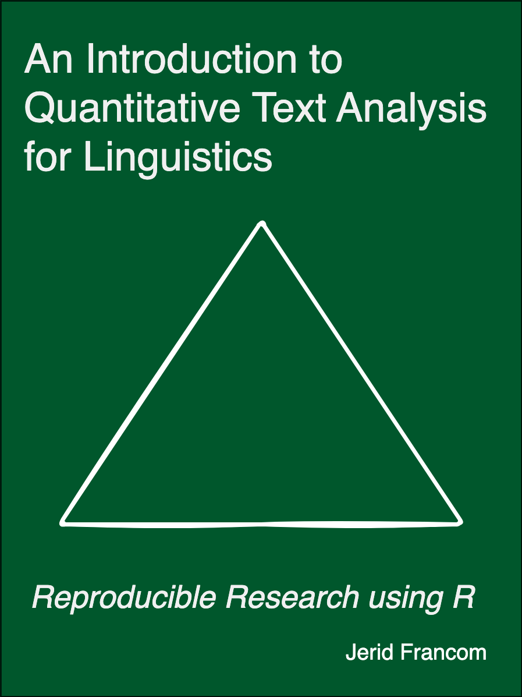

An Introduction to Quantitative Text Analysis for Linguistics
Reproducible Research using R
Welcome

The goal of this textbook is to provide readers with foundational knowledge and practical skills in quantitative text analysis using the R programming language.
By the end of this textbook, readers will be able to identify, interpret and evaluate data analysis procedures and results to support research questions within language science. Additionally, readers will gain experience in designing and implementing research projects that involve processing and analyzing textual data employing modern programming strategies. This textbook aims to instill a strong sense of reproducible research practices, which are critical for promoting transparency, verification, and sharing of research findings.
This textbook is geared towards advanced undergraduates, graduate students, and researchers looking to expand their methodological toolbox. It assumes no prior knowledge of programming or quantitative methods and prioritizes practical application and intuitive understanding over technical details.
About the author
Dr. Jerid Francom is Associate Professor of Spanish and Linguistics at Wake Forest University. His research focuses on the use of language corpora from a variety of sources (news, social media, and other internet sources) to better understand the linguistic and cultural similarities and differences between language varieties for both scholarly and pedagogical projects. He has published on topics including the development, annotation, and evaluation of linguistic corpora and analyzed corpora through corpus, psycholinguistic, and computational methodologies. He also has experience working with and teaching statistical programming with R.
License

This work by Jerid C. Francom is licensed under a Creative Commons Attribution-NonCommercial-NoDerivatives 4.0 International License.
Credits
Font Awesome Icons are SIL OFL 1.1 Licensed 
Acknowledgements
The development of this book has benefited from the generous feedback from the following people: Andrea Bowling, Caroline Brady, Declan Golsen, Asya Little, Claudia Valdez, Laura Aull, Jack Nelson, (add your name here!). As always, any errors or omissions are my own.
Build information
This textbook was built with the quarto package (Allaire 2022) and the bookdown package (Xie 2023) for R. The source code for this book is available on GitHub.
This version of the textbook was built with R version 4.3.1 (2023-06-16) on macOS Ventura 13.5 with the following packages:
| package | version | source |
|---|---|---|
| dplyr | 1.1.2 | CRAN (R 4.3.0) |
| ggplot2 | 3.4.2 | CRAN (R 4.3.0) |
| here | 1.0.1 | CRAN (R 4.3.0) |
| knitr | 1.43 | CRAN (R 4.3.0) |
| qtalrkit | 0.0.2.0 | Github (qtalr/qtalrkit@1f174272276094187b706287d7907cce7634bf24) |
| readr | 2.1.4 | CRAN (R 4.3.0) |
| reprex | 2.0.2 | CRAN (R 4.3.0) |
| rmarkdown | 2.23 | CRAN (R 4.3.1) |
| rstudioapi | 0.15.0 | CRAN (R 4.3.1) |
| stringr | 1.5.0 | CRAN (R 4.3.0) |
| tibble | 3.2.1 | CRAN (R 4.3.0) |
| tidyr | 1.3.0 | CRAN (R 4.3.0) |